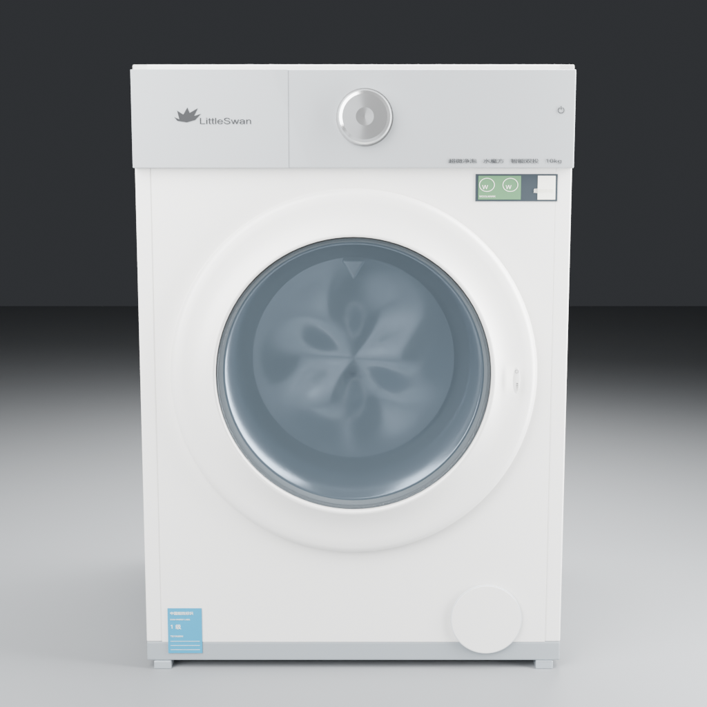
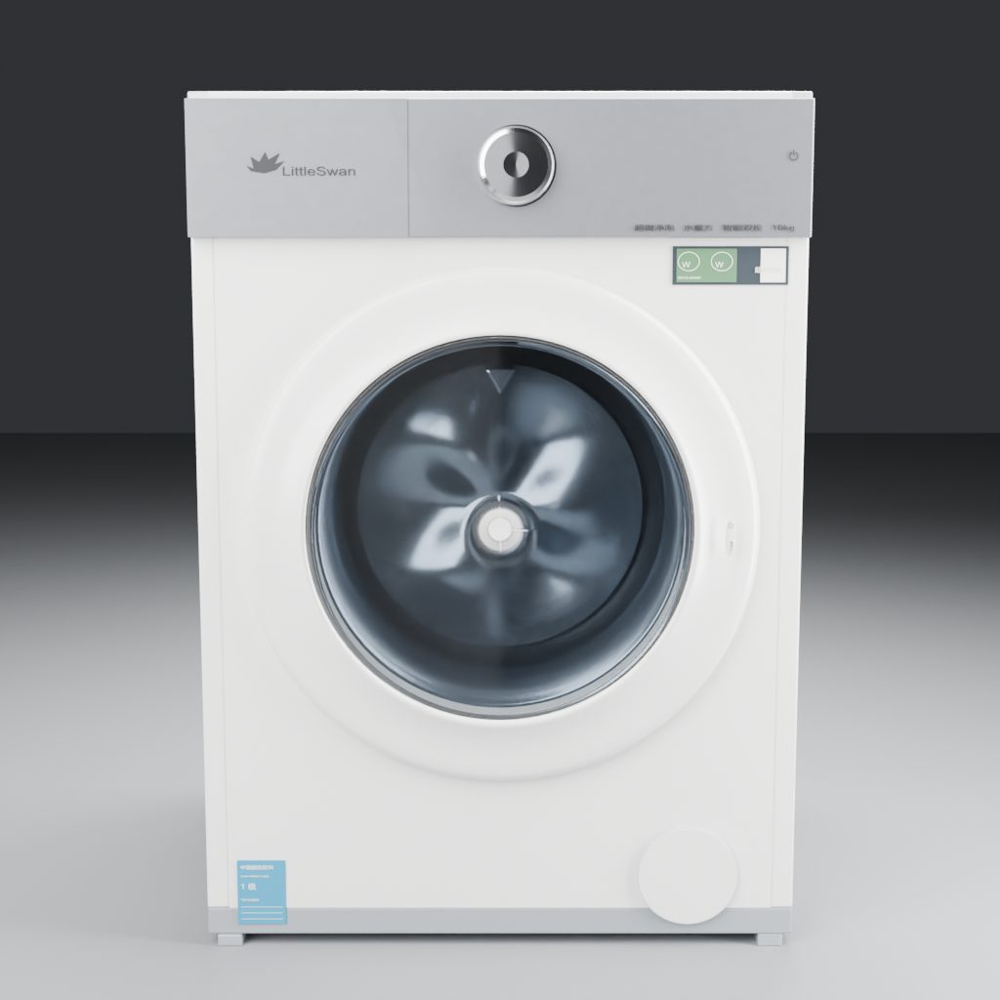
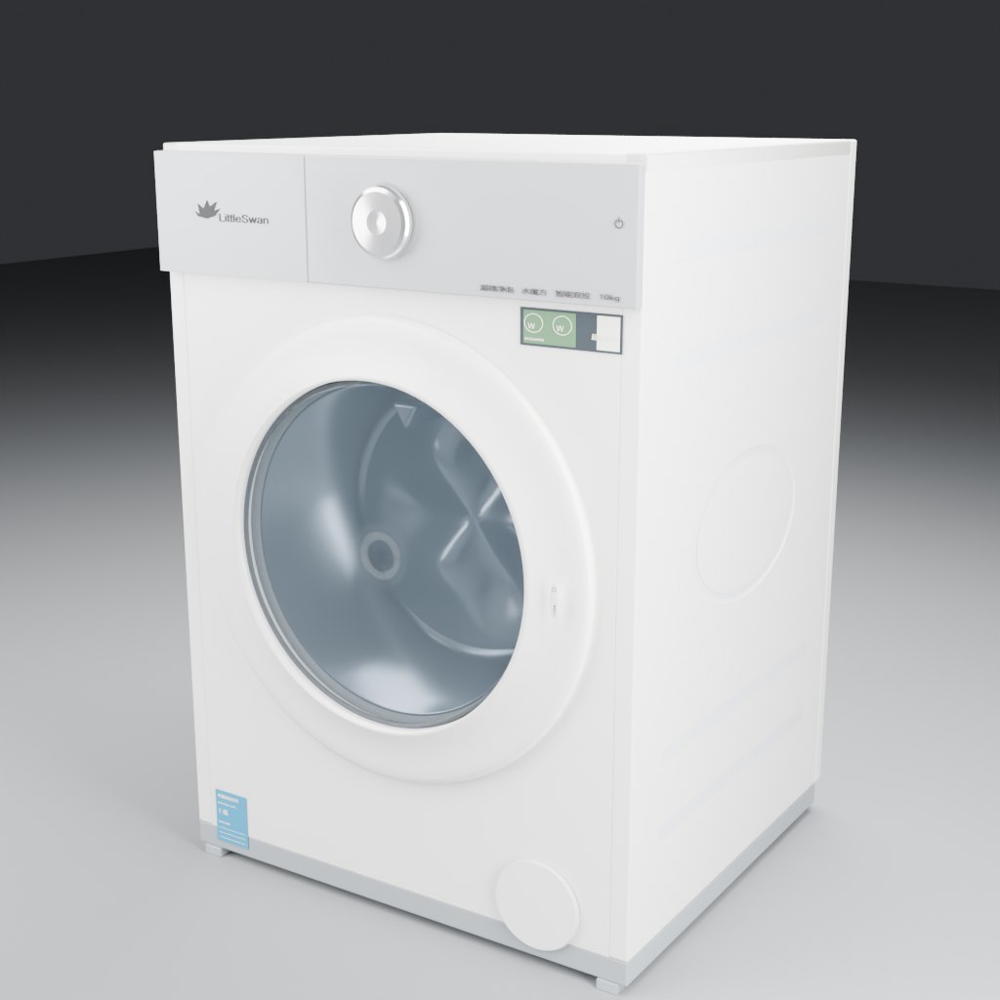
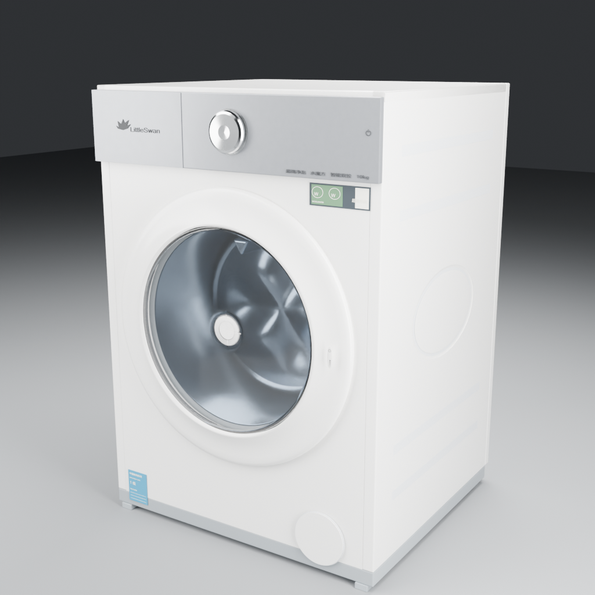
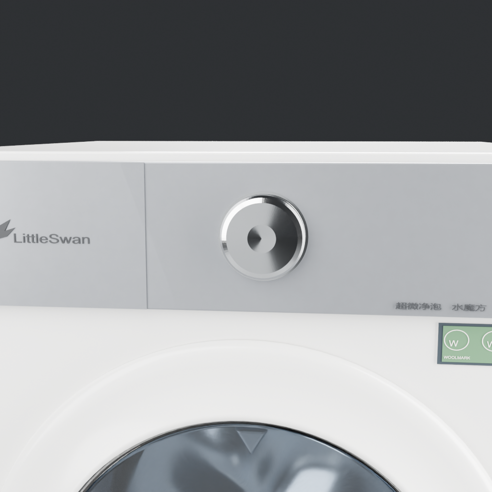
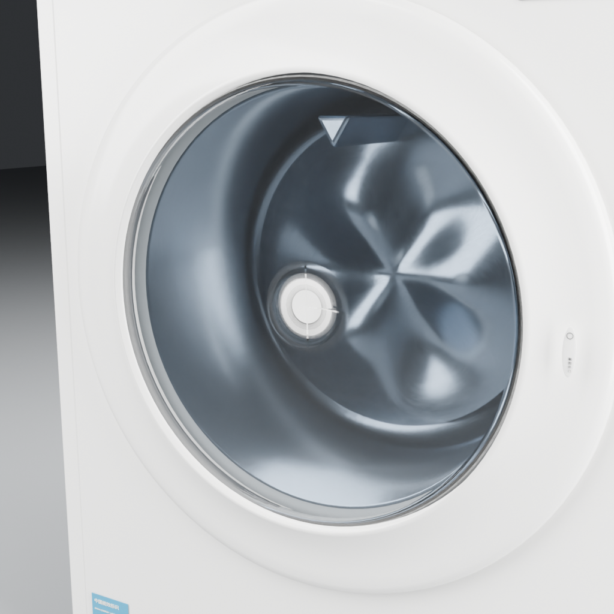
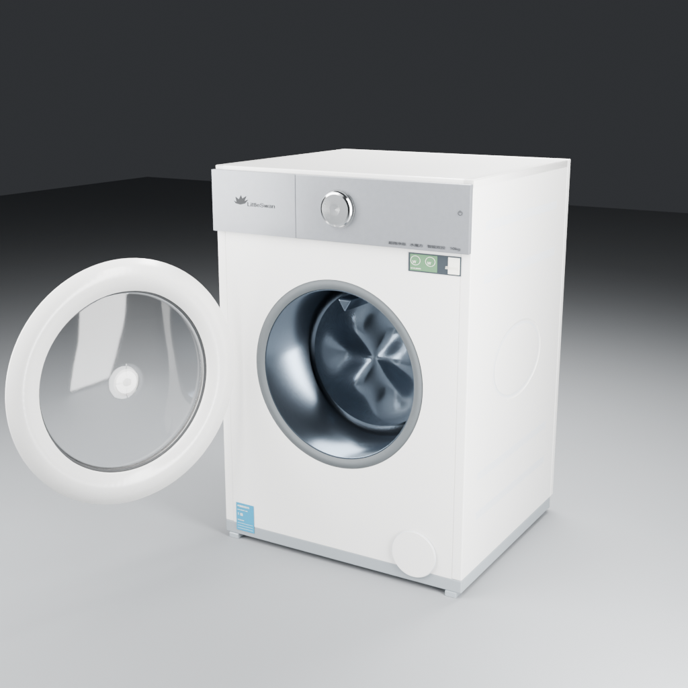
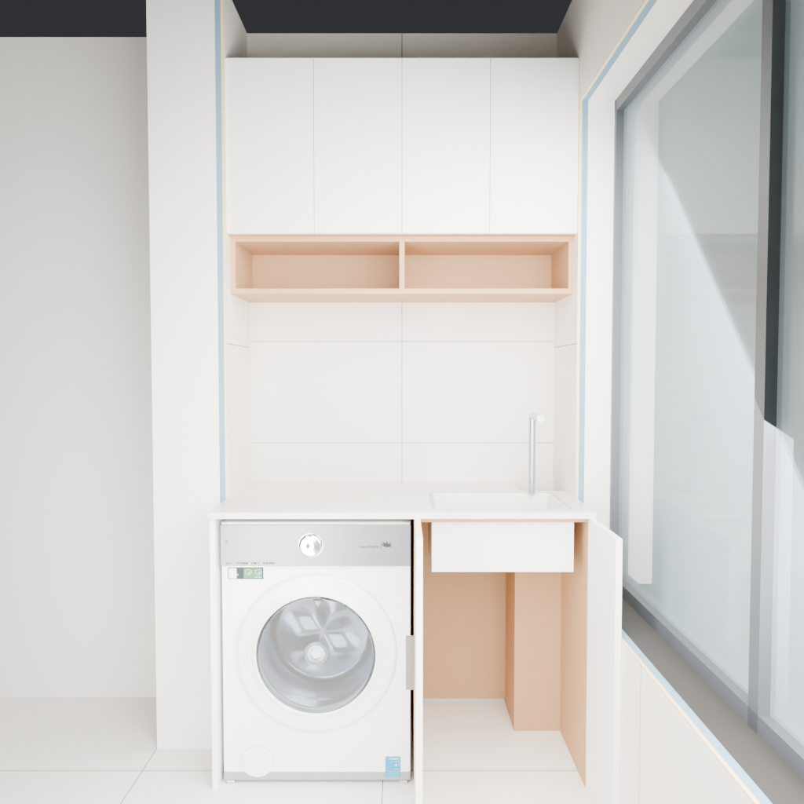

正面／斜视的前后对照使用相同的新生产几何、机位、灯光与曝光，分别保留旧材质与新材质。独立产品棚拍与真实洗衣区均通过正式精修渲染接口生成。程序微表面与补光属于 Blender 精修层，WebGL 保留兼容物理参数。
保留尺寸、门轴与空间规则。玻璃薄壳与光学参数为外观估计，关闭玻璃阴影属于近似；文字、内筒与实物反射仍有差距。真实项目只读，其他家具未升级材质。查看验证记录与边界







